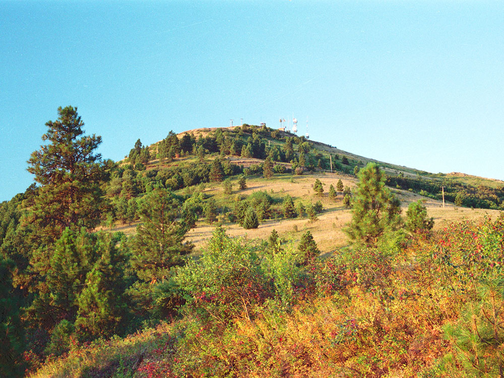
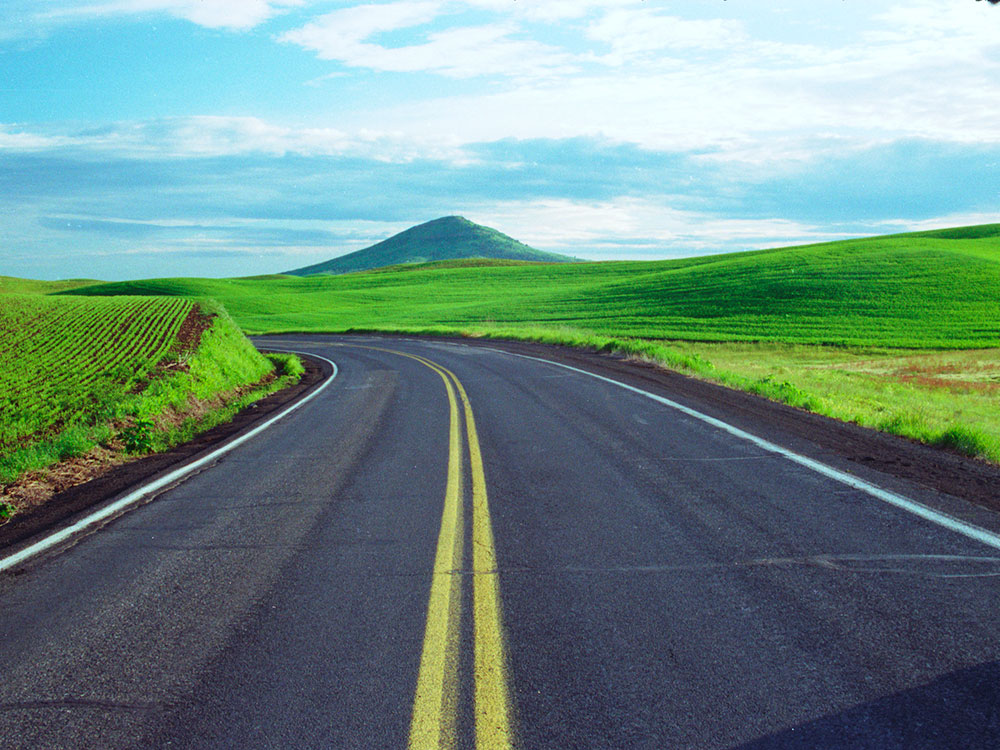
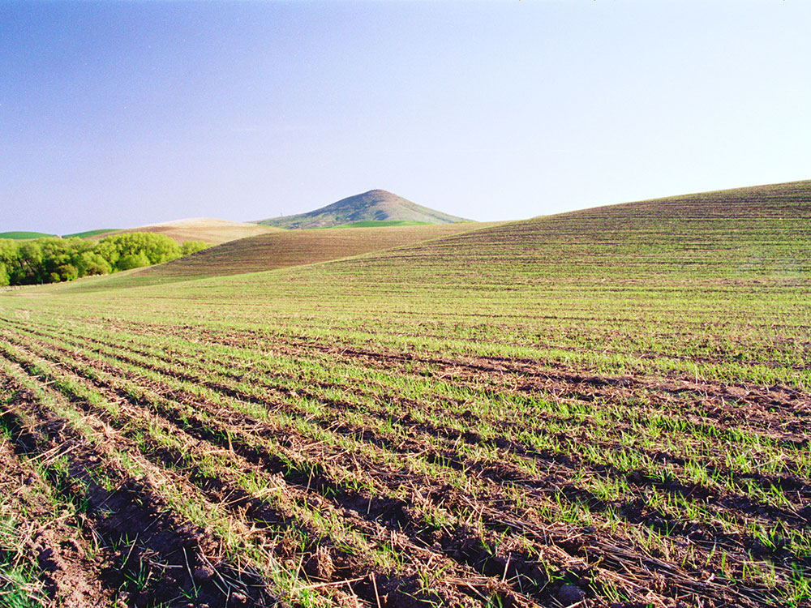
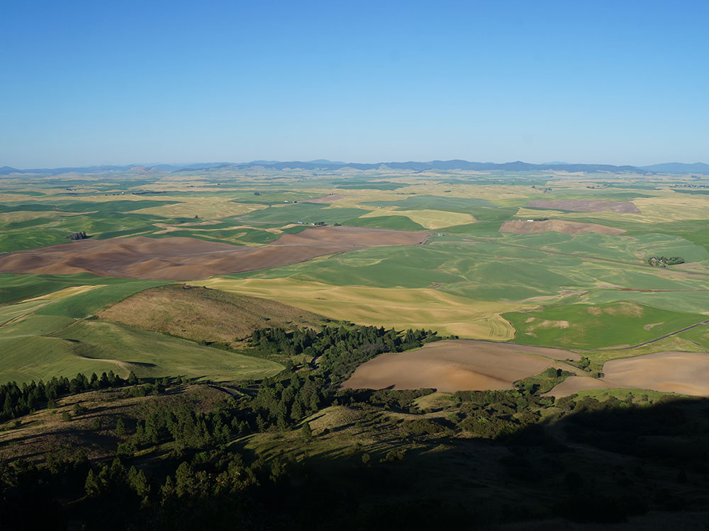
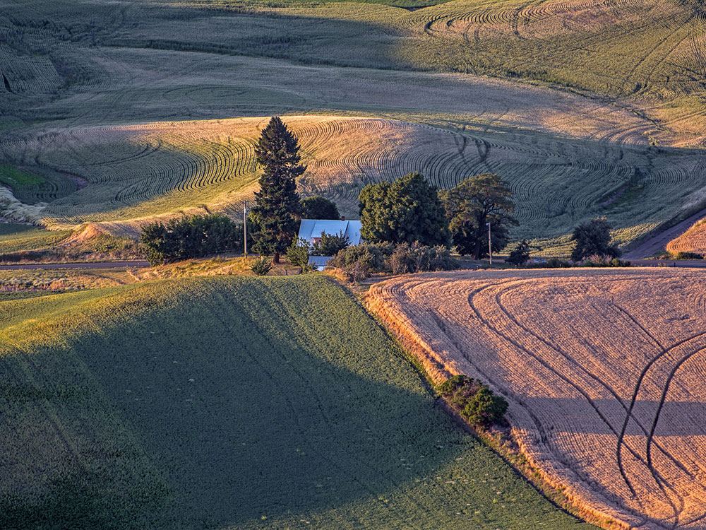

Vibrant inland city known for its riverfront parks, cultural attractions, historic architecture, outdoor recreation, and scenic falls that flow through the downtown core.
Fees vary for attractions, museums, parks, events, tours, and recreational activities
How to Get There
From Coeur d'Alene, Idaho (34 mi): Take I-90 West across the Idaho-Washington state line and continue directly into downtown Spokane.
Overview
Spokane is the second-largest city in Washington State and the economic center of the Inland Northwest, on the Spokane River in the eastern part of the state, about 20 miles from the Idaho border. It is known for Spokane Falls, a series of waterfalls in the middle of downtown, for Riverfront Park, the site of the 1974 World's Fair, and for its affordable, outdoorsy lifestyle. The city is also the home of Gonzaga University and the Gonzaga Bulldogs basketball team, whose success has put Spokane on the national map.
Visitors come to Spokane for Riverfront Park and the falls, for the Northwest Museum of Arts and Culture, and for Manito Park and Gardens. They also come for the Centennial Trail, for the craft breweries and wineries, and for skiing at Mount Spokane and day trips to Coeur d'Alene.
History
The Spokane people, whose name means "children of the sun," lived and fished at the falls for thousands of years. Fur traders arrived in the early 1800s, and in 1871 James Glover established a sawmill at the falls, founding the city of Spokane Falls, later renamed Spokane. The arrival of the Northern Pacific Railroad in 1881 and the discovery of silver and lead in the Coeur d'Alene mining district led to growth, and a fire in 1889 destroyed the downtown, which was quickly rebuilt in brick and stone. In 1974, Spokane hosted Expo '74, the first environmentally themed World's Fair, which transformed the riverfront into Riverfront Park.
Sightseeing and Popular Landmarks
Riverfront Park has the 1974 World's Fair pavilion, the Looff Carrousel, an 1909 carousel, and the Spokane Falls, which can be viewed from a gondola or a bridge. The Monroe Street Bridge, a concrete arch from 1911, and the Davenport Grand Hotel are downtown landmarks, and the Garland District and the Perry District have shops and restaurants. The Northern Pacific Railway's Great Northern Clock Tower, a symbol of the city, stands in the park. The Bing Crosby Theater honors the singer, who grew up in Spokane.
Culture and Museums
The Northwest Museum of Arts and Culture, known as the MAC, has exhibits on Native American cultures, regional history, and art, and includes the historic Campbell House. The Jundt Art Museum at Gonzaga and the Spokane Symphony add to the arts, and the Bing Crosby Theater and the Fox Theater host performances. Bloomsday, a 12K run each May with tens of thousands of participants, is the city's signature event.
Parks
Spokane has more than 80 parks. Riverfront Park is the center, and Manito Park has a Japanese garden, a rose garden, and a conservatory, and the Spokane River Centennial Trail is a 37-mile path along the river from Idaho to Nine Mile Falls. Riverside State Park has hiking and rafting, and Mount Spokane State Park and the Mica Peak area offer skiing and trails. Lake Coeur d'Alene and Schweitzer Mountain in Idaho are within an hour's drive.
Seasons and Weather
Spokane has a warm-summer continental climate. Summers are hot and dry, with highs in the 80s and 90s°F, and winters are cold and snowy, with highs in the 30s°F and about 45 inches of snow. Spring and fall are mild, and summer wildfire smoke can occur.
Things to Do
Explore Riverfront Park
Riverfront Park is Spokane's premier downtown attraction and one of the city's most recognizable landmarks. Originally developed for Expo '74, the park features scenic walking paths, public art, gardens, river viewpoints, and direct access to Spokane Falls. The Spokane River flows through the center of the park, creating a unique blend of urban and natural scenery.
See Spokane Falls
Spokane Falls is the centerpiece of downtown Spokane and one of the largest urban waterfalls in the United States. The falls can be viewed from several overlooks, suspension bridges, and observation areas throughout Riverfront Park. Spring runoff often provides the most dramatic water flow and photography opportunities.
Ride the Numerica SkyRide
The Numerica SkyRide offers visitors a unique aerial perspective of Spokane Falls and the Spokane River. The enclosed gondolas descend toward the river gorge, providing some of the closest and most impressive views available anywhere in the city.
Visit the Historic Looff Carousel
Built in 1909 and listed on the National Register of Historic Places, the Looff Carousel is one of Spokane's most treasured attractions. The beautifully restored carousel features hand-carved wooden animals and remains a favorite destination for visitors of all ages.
Discover Spokane's Public Art and Expo '74 Legacy
Throughout Riverfront Park, visitors can explore sculptures, historical landmarks, and exhibits that celebrate Spokane's role as host of the environmentally themed 1974 World's Fair. Notable attractions include the Garbage Goat sculpture, the Expo Pavilion, and numerous public art installations.
Explore Manito Park
Manito Park is one of Spokane's most beautiful green spaces, offering botanical gardens, a Japanese garden, rose gardens, walking paths, and seasonal floral displays. The park is a favorite location for relaxing walks, photography, and outdoor recreation.
Walk or Bike the Centennial Trail
The Centennial Trail follows the Spokane River and provides miles of paved pathways for walking, running, and cycling. The trail connects many of Spokane's parks and scenic waterfront areas while offering excellent river views.
Tour the Historic Davenport Hotel
The Davenport Hotel is a Spokane landmark known for its historic architecture, elegant interiors, and role in the city's history. Visitors can admire the restored public spaces, dine onsite, or simply experience one of the Pacific Northwest's most famous historic hotels.
Visit Spokane's Brewery and Winery Scene
Spokane features a growing collection of craft breweries, urban wineries, tasting rooms, and locally owned restaurants. Visitors can sample regional beers and wines while exploring downtown and surrounding neighborhoods.
Take a Day Trip to Nearby Outdoor Attractions
Spokane serves as an excellent base for exploring eastern Washington and northern Idaho. Popular nearby destinations include Mount Spokane State Park, Lake Coeur d'Alene, Palouse Falls State Park, and Grand Coulee Dam.
Top Attractions and Trails
Spokane Falls Viewing Walk
Length: Approximately 1 mile round trip
Elevation Gain: Minimal
Difficulty: Easy
This walk connects several overlooks, suspension bridges, and viewing platforms around Spokane Falls. Visitors can experience multiple perspectives of the waterfalls while learning about the history and significance of the Spokane River.
Riverfront Park Walking Loop
Length: Approximately 2 miles
Elevation Gain: Minimal
Difficulty: Easy
This route showcases many of Riverfront Park's major attractions, including Spokane Falls, the Looff Carousel, the Expo Pavilion, public art installations, and scenic river viewpoints.
Centennial Trail - Downtown Spokane Segment
Length: Variable distance
Elevation Gain: Minimal
Difficulty: Easy
Following the Spokane River through downtown, this popular trail offers scenic waterfront views, access to parks, and opportunities for walking, running, and cycling along one of the region's most important recreational corridors.
Sources: Visit Spokane official visitor information describing Spokane Falls, Riverfront Park, Numerica SkyRide, the historic Looff Carousel, and key attractions throughout downtown Spokane.
Spokane Falls Visitor Information
Riverfront Park Visitor Information
Additional information verified through the City of Spokane Riverfront Park sightseeing resources covering Spokane Falls history, viewpoints, park attractions, and visitor experiences.
City of Spokane Riverfront Park Sightseeing Guide
This article uses material from Wikipedia as well as information from official tourism and institutional sources. Key references include Visit Spokane, Northwest Museum of Arts and Culture, Riverfront Spokane, Washington State Tourism, and National Weather Service Spokane. Wikipedia material is from the article "Spokane, Washington", and is available under the Creative Commons Attribution-Share-Alike License 3.0.









.jpeg){kind=link}